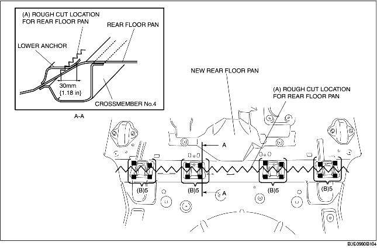
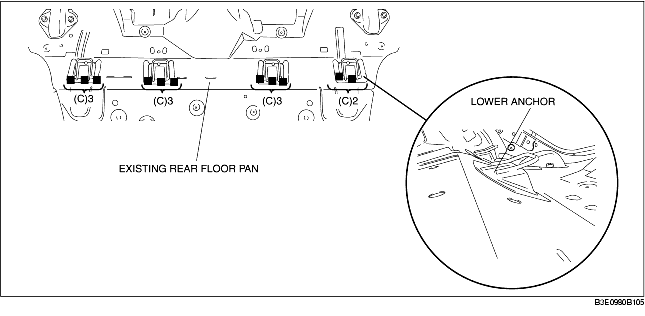
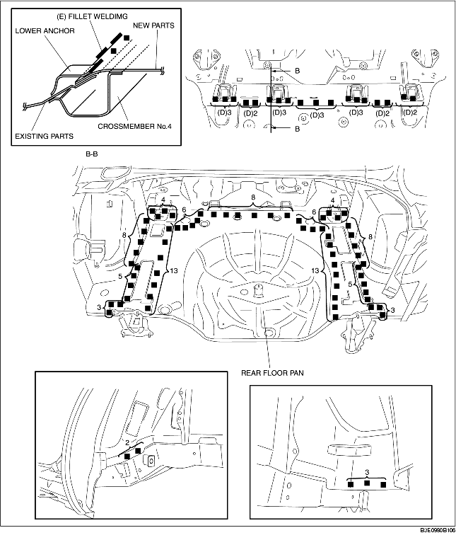

1. To prepare for installation, cut area (A) on the new rear floor pan, drill the 20 locations indicated by (B) and then remove the lower anchor.

2. Drill the 11 locations indicated by (A).
3. Separate the lower anchor where joined using a chisel or similar tool and bend upwards to facilitate installation.

4. Apply spot sealer to the areas where both the overlapping ends of the new and existing parts will be welded. Adhere the sections to be welded, and plug weld in 18 locations indicated by (D). Fillet weld along the seams of the lower anchor, and new and existing parts at the locations indicated by (E).
5. Weld the remaining weld locations and install the rear floor pan.
